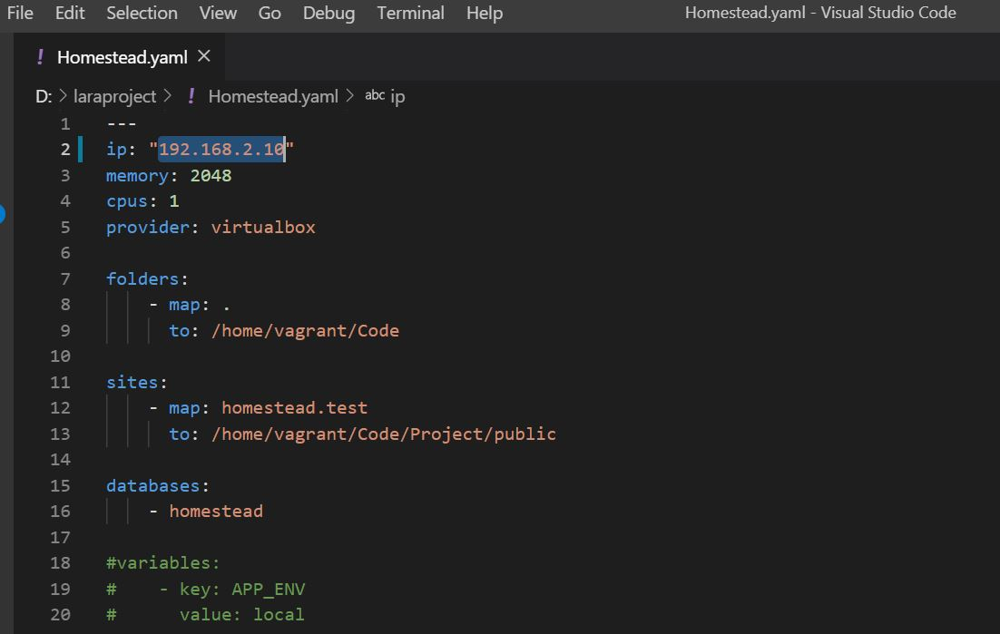
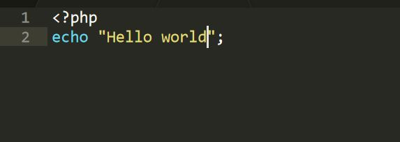

Installare e configurare Homestead Improved

Siamo quasi in dirittura di arrivo, cosa ci manca prima di iniziare a programmare?
Dobbiamo ancora scaricare una macchina virtuale (o box), adatta a sviluppare con Laravel.
Ovviamente, nulla ci vieta di creare da zero un sistema per farlo, ma perchè reinventare la ruota, quando abbiamo a disposizione così tante macchine già pronte all'uso?
E' la bellezza dell'open source!
Ci serviremo di Github, di cosa si tratta?
La definizione non è semplicissima, possiamo pensarlo come un social per professionisti, diventato molto popolare tra coloro che lavorano in ambito informatico perchè permette, tra le varie cose, di creare delle repository con git, su cui effettuare un versionamento del codice, collaborare a progetti comuni in remoto, impostare accessi alle proprie cartelle, e così via.
Sebbene non sia il cardine di questo tutorial, imparare ad utilizzare github, spesso fa la differenza tra un buon sviluppatore ed uno sviluppatore che ha bisogno di fare esperienza.
Perchè lo citiamo? per due motivi:
1) Più avanti nel nostro progetto, lo utilizzeremo per versionare il nostro codice e per effettuare il lancio in un ambiente online su un server della nostra applicazione web.
2) Perchè su github è hostata una box che ci interessa.
Senza ulteriori indugi, se siamo su Linux o Mac, apriamo un terminale, mentre se siamo su Windows apriamo l'applicazione git bash, che abbiamo installato nel preedente tutorial installando Git.
Git Bash è una applicazione che ci consente di lanciare in ambiente Windows comandi Unix, da questo momento in poi, quindi, tutti i comandi saranno uguali a prescindere dal nostro sistema operativo.
Vi consiglio di prendere la mano ad utilizzare i comandi Unix di base, perchè nella vita dello sviluppatore vi troverete a digitarne parecchi.
utente@PCMATTIA MINGW64 /d
$: mkdir laraproject
Con questo comando creiamo una cartella di nome "laraproject" nella cartella attuale in cui ci troviamo, nel mio caso, nella radice della partizione D: del disco, nel vostro caso, scegliete quella più comoda per voi.
Entriamo nella cartella.
cd laraproject
Una volta dentro la cartella, lanciamo lo scaricamento da github di una box adatta a sviluppare in Laravel.
$ git clone https://github.com/Swader/homestead_improved.git laraproject
Cloning into 'laraproject'...
remote: Enumerating objects: 192, done.
Receiving obremote: Total 192 (delta 0), reused 0 (delta 0), pack-reused 192
Receiving objects: 100% (192/192), 48.13 KiB | 1.15 MiB/s, done.
Resolving deltas: 100% (110/110), done.
Con questo comando abbiamo creato una prima macchina virtuale nella cartella indicata dopo il link. Proseguiamo con i comandi, entriamo nella cartella e visualizziamo i file al suo interno.
$ cd laraproject
$ ls
after.sh* bin/ composer.lock Homestead.yaml readme.md src/
aliases composer.json homestead* LICENSE.txt scripts/ Vagrantfile
assicuriamoci di essere dentro la cartella in cui è stata creata la macchina virtuale. Come facciamo a sapere che è quella giusta? Utilizzando il comando "ls" possiamo vedere le cartelle ed i file contenuti nella posizione attuale, assicuriamoci di vedere tra questi un file nominato "Vagrantfile" e avviamo la macchina virtuale. Se è la prima volta che viene avviata, ci vorrà un pò, e dipende anche dalla velocità della nostra connessione a internet. Se tutto va correttamente, dovremmo avere il terminale che ci da i seguenti messaggi. Nota: alle volte può capitare su macchine windows o linux che avviando vagrant venga visualizzato un messaggio di errore in cui viene detto che virtualbox solleva una eccezione dovuta al fatto che non è l'unico boot presente, ciò è dovuto al fatto che le macchine più moderne implementano a livello UEFI una funzione di secure boot.
Per risolvere la cosa, basterà disabilitare il secure boot della propria macchina, una rapida ricerca su Google dovrebbe aiutarvi a capire come fare, qui non ci dilungheremo perchè differisce leggermente da macchina a macchina.
$ vagrant up
Bringing machine 'default' up with 'virtualbox' provider...
==> default: Checking if box 'laravel/homestead' version '6.4.0' is up to date...
==> default: Vagrant has detected a configuration issue which exposes a
==> default: vulnerability with the installed version of VirtualBox. The
==> default: current guest is configured to use an E1000 NIC type for a
==> default: network adapter which is vulnerable in this version of VirtualBox.
==> default: Ensure the guest is trusted to use this configuration or update
==> default: the NIC type using one of the methods below:
==> default:
==> default: https://www.vagrantup.com/docs/virtualbox/configuration.html#default-nic-type
==> default: https://www.vagrantup.com/docs/virtualbox/networking.html#virtualbox-nic-type
==> default: Clearing any previously set network interfaces...
==> default: Preparing network interfaces based on configuration...
default: Adapter 1: nat
default: Adapter 2: hostonly
==> default: Forwarding ports...
default: 80 (guest) => 8000 (host) (adapter 1)
default: 443 (guest) => 44300 (host) (adapter 1)
default: 3306 (guest) => 33060 (host) (adapter 1)
default: 5432 (guest) => 54320 (host) (adapter 1)
default: 8545 (guest) => 8545 (host) (adapter 1)
default: 30301 (guest) => 30301 (host) (adapter 1)
default: 30302 (guest) => 30302 (host) (adapter 1)
default: 30303 (guest) => 30303 (host) (adapter 1)
default: 30304 (guest) => 30304 (host) (adapter 1)
default: 30305 (guest) => 30305 (host) (adapter 1)
default: 30306 (guest) => 30306 (host) (adapter 1)
default: 22 (guest) => 2222 (host) (adapter 1)
==> default: Running 'pre-boot' VM customizations...
==> default: Booting VM...
==> default: Waiting for machine to boot. This may take a few minutes...
default: SSH address: 127.0.0.1:2222
default: SSH username: vagrant
default: SSH auth method: private key
......

Ora vogliamo testare che la macchina funzioni, per farlo, creiamo nella cartella "laraproject" un'altra cartella e la nominiamo "Project", dentro di essa un'altra cartella "public", entriamo in quest'ultima e creiamo un file index.php. Al suo interno inseriamo un messaggio di test: 
Se ora nella barra dell'url inseriamo l'indirizzo ip mappato dal file Homestead.yaml, dovremmo vedere il nostro messaggio di test.
Ci siamo quasi!
Nella prossima lezione, concluderemo finalmente la configurazione del nostro ambiente di sviluppo! Impareremo a maneggiare il file Homestead.yaml, ed inizializzeremo un nuovo progetto Laravel. Tieni duro, ci sei quasi!